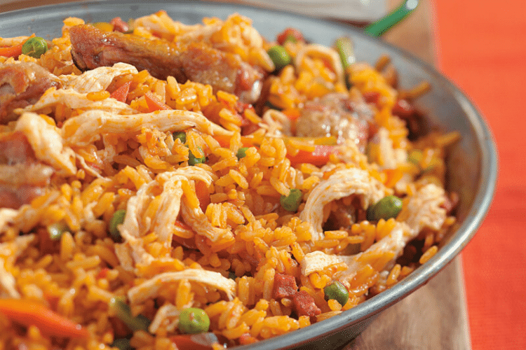

Cinammon Rolls Recipe

This Colombian Arroz con Pollo is a hearty and flavorful one-pot dish that’s a staple in Colombian cuisine.
Made with tender shredded chicken, perfectly seasoned rice, colorful vegetables, and aromatic spices, it’s a comforting meal that’s both nutritious and satisfying.
Often served with fried plantains, avocado slices, and a squeeze of lime, this dish is a celebration of Colombian flavors and culture, perfect for family meals or special gatherings.
Its vibrant colors and rich taste make it a crowd-pleaser every time!
Ingredients
- 400g long-grain whithe rice
- 1L chicken broth
- 2 tbsp vegetable oil
- 1 medium onion, finely chopped
- 1 red bell pepper, diced
- 1 green bell pepper, diced
- 2 garlic cloves, minced
- 2 ,edium tomatoes, finely chopped or blended
- 1/2 tsp ground cumin
- tsp ground tumeric (optional, for color)
- 200g shredded chicken breast
- 150g frozen peas
- 150g diced carrots
- 50g chopped cilantro
- Salt and black pepper to taste
Optional Grnish:
- Lime wedges
- Fried plantains
- Avocado slices
Instructions
1. Prepare the Chicken:
- If using raw chicken, boil 2-3 chicken breasts in salted water with a bay leaf until fully cooked.
Shred the chicken and reserve 4 cups of the broth for the rice.
2. Cook the Rice:
- Heat 2 tbsp of vegetable oil in a large pot or deep skillet over medium heat.
- Add the onion, red bell pepper, green bell pepper, and garlic.
Sauté until soft and fragrant, about 5 minutes.
- Stir in the tomatoes, cumin, turmeric (if using), salt, and pepper.
Cook for 5 more minutes until the mixture thickens slightly.
3.Combine ingredients:
- Add the rice to the pot and stir to coat it with the seasoning mixture.
- Pour in the chicken broth and bring to a boil.
Reduce the heat to low, cover, and simmer for 15-20 minutes until the rice is tender and the liquid is absorbed.
4. Mix in Vegtables and Chicken:
- Gently fold in the shredded chicken, peas, and cooked carrots.
Cover and cook for another 5 minutes on low heat to heat everything through.
5. Finish and Serve:
- Stir in the chopped cilantro if desired. Adjust seasoning with salt and pepper.
- Serve hot with lime wedges, fried plantains, or avocado slices on the side for a traditional Colombian touch